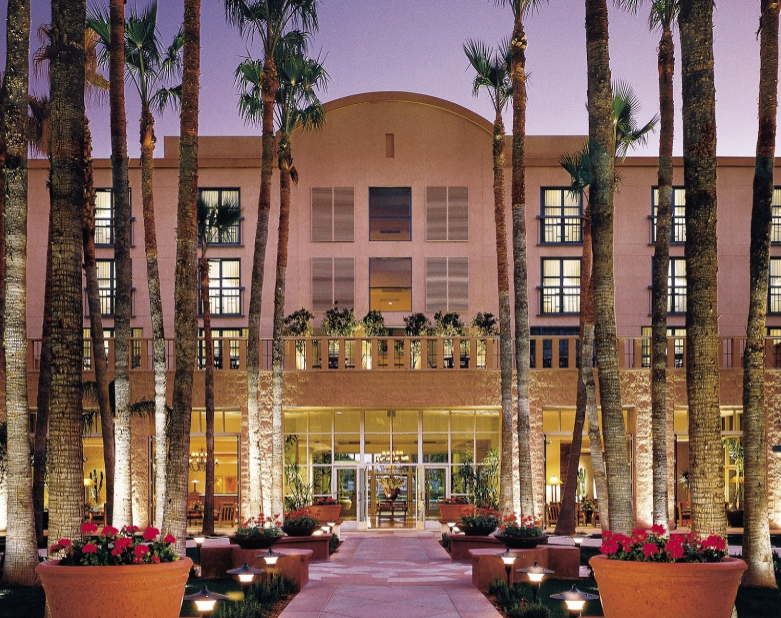

Hotel Information
Tempe Mission Palms Hotel and Conference Center is the hotel as well as the venue for the Main Meeting. The hotel is located in the Mill Avenue District of downtown Tempe, a vibrant community of restaurants, shopping and cultural activities.
http://www.missionpalms.com
We have a special group rate for the meeting, available during a window from three days prior to the meeting to three days after:
Single $149.00
Double $149.00
The group booking code is: 2U09ZO
Meeting attendees are responsible for making their own reservations. You may call the hotel directly at (480) 894-1400 or toll-free at (800) 547-8705. A special website for making reservations online is available:
Government employees looking to reserve a room with the government rate need to call using the numbers given above. All reservations must be made before September 15, 2014 in order to assure availability and the group rate.
If you would like to share a room, visit this room sharing spreadsheet.
